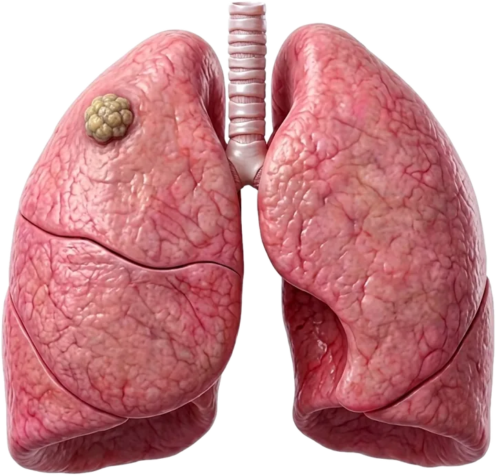
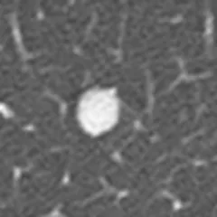
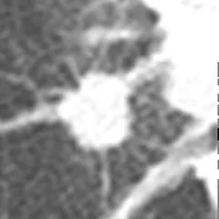
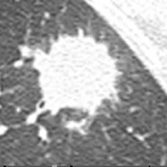
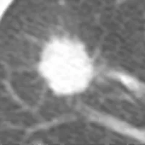
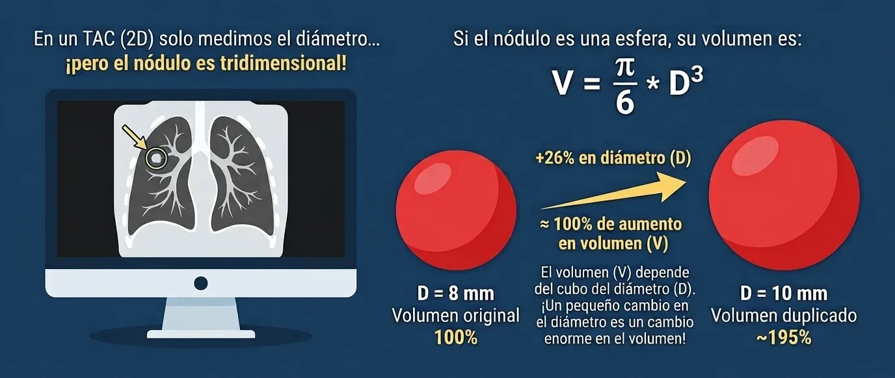
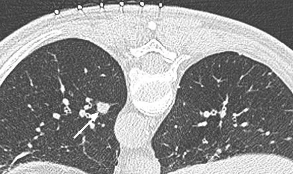
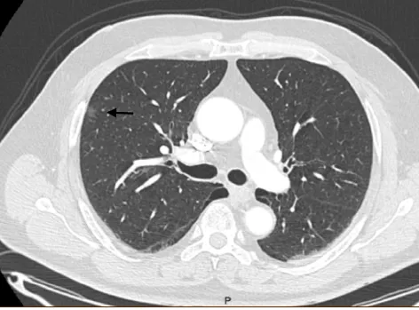
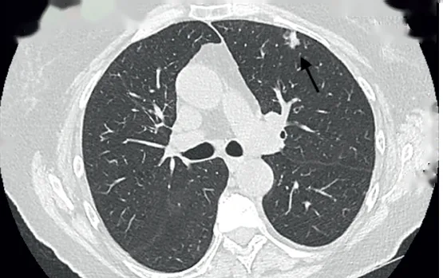
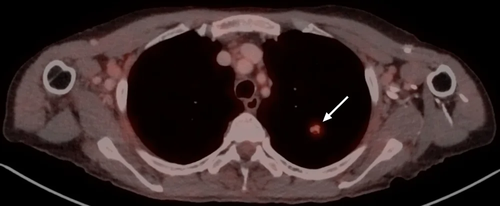

Nódulos pulmonares: qué son y qué hacer
La mayoría de los nódulos pulmonares no son cáncer. Lo que define la conducta son las características del paciente y las del nódulo: tamaño, bordes, densidad y evolución en el tiempo.

¿Qué es un nódulo pulmonar?
Es una opacidad en la radiografía o el TAC de 3 cm o menos de diámetro, rodeada de pulmón. Las opacidades de más de 3 cm se llaman masas. Hay más de 80 causas posibles, desde enfermedades benignas hasta cánceres pulmonares primarios o metástasis.
Es un hallazgo frecuente. En programas de detección precoz con TAC de baja dosis, entre el 23 % y el 68 % de los pacientes tiene uno o más nódulos.1
¿Qué puede ser un nódulo?
- Cáncer pulmonar: adenocarcinoma (in situ, mínimamente invasor, invasor, mucinoso), carcinoma escamoso, tumores neuroendocrinos (incluido el carcinoide), carcinoma sarcomatoide
- Metástasis de cáncer de colon y recto, riñón, mama, glándulas salivales, laringe y melanoma
- Linfoma
- Lesión preinvasora: hiperplasia adenomatosa atípica
- Ganglios dentro del pulmón, incluido el ganglio antracótico
- Tumores y proliferaciones benignas: hamartoma, hiperplasia de músculo liso, nódulo fibroso
- Infecciones: tuberculosis, histoplasmosis, granulomas por otras micobacterias u hongos, quiste hidatídico
- Inflamatorias: neumonía en organización, bronquiolitis respiratoria, granulomatosis broncocéntrica, artritis reumatoide, granulomatosis con poliangeítis, sarcoidosis
- Vasculares, congénitas o traumáticas: infarto pulmonar, secuestro pulmonar, quiste broncogénico, hematoma
- Ocupacionales: neumoconiosis
En las series de nódulos operados publicadas por el Dr. Lazo y su equipo, la proporción de lesiones malignas fue de 80 % (O'Brien 2018)6 y 87 % (Vega 2018)1. Los hallazgos benignos más frecuentes fueron inflamatorios, como la neumonía en organización, e infecciosos, como la tuberculosis y la histoplasmosis.1,7
¿Cómo se sospecha que un nódulo es maligno?
- Edad mayor de 45 años
- Tabaquismo activo
- Cáncer previo en otro órgano
- Exposición a carcinógenos
- Tamaño mayor de 6 mm
- Bordes espiculados o irregulares
- Calcificaciones excéntricas o irregulares
- Ubicación en un lóbulo superior
- Tiempo de duplicación de 20 a 400 días
La mayoría de los pacientes no tiene síntomas. El dato más útil suele ser un TAC o una radiografía anterior: compararlos muestra si el nódulo es nuevo, si creció o si lleva años sin cambios. Conviene llevar a la consulta todas las imágenes previas.
En una serie de 100 pacientes operados por nódulo pulmonar entre 2014 y 2018, el 60 % tenía antecedente de tabaquismo y el 49 % de un cáncer previo. Las metástasis más frecuentes fueron las de origen colorrectal.1
Características del nódulo
Tamaño
La probabilidad de cáncer aumenta con el diámetro del nódulo:2
| Diámetro | Probabilidad de cáncer |
|---|---|
| Menor de 5 mm | 0 a 1 % |
| 5 a 10 mm | 6 a 28 % |
| Mayor de 20 mm | 64 a 82 % |
Bordes
Con bordes lisos, el riesgo de cáncer fue de 20 a 30 %. Con bordes irregulares, lobulados o espiculados fue mayor, entre 33 y 100 % según el estudio.2




Crecimiento
Se mide como tiempo de duplicación del volumen: los días que tarda el nódulo en duplicar su volumen. Un tiempo de 20 a 400 días se asocia a mayor riesgo.1

Calcificación
Las calcificaciones excéntricas o irregulares se asocian a mayor riesgo.1
Ubicación
Los nódulos de los lóbulos superiores tienen mayor riesgo.1
Las cifras de tamaño y bordes provienen de estudios con poblaciones distintas y varían entre ellos.
Tipos de nódulo según su densidad

Nódulo sólido
Es el tipo más frecuente. Su manejo se define por el tamaño y el riesgo del paciente.

Nódulo en vidrio esmerilado puro
Puede ser inflamatorio y desaparecer, o corresponder a un adenocarcinoma de crecimiento lento. Por eso el primer paso es confirmar que persiste en un control.

Nódulo mixto (parcialmente sólido)
A mayor proporción de componente sólido, mayor probabilidad de cáncer. La aparición de una porción sólida en un nódulo en vidrio esmerilado, o el crecimiento de la que ya existía, también aumenta la sospecha.
¿Cómo se estudia un nódulo pulmonar?
Historia clínica e imágenes previas
Se registran la edad, el tabaquismo, los cánceres previos y la exposición a carcinógenos. Se comparan todas las radiografías y TAC anteriores: muestran si el nódulo es nuevo, si creció o si lleva años sin cambios.
TAC de tórax y PET-CT
TAC de tórax
Los equipos multidetectores obtienen cortes cercanos a 1 mm, que permiten detectar nódulos menores de 2 cm que no se ven en la radiografía y medir su tamaño, bordes y densidad.1 Muchos nódulos solo requieren controles con TAC, según los criterios de la Sociedad Fleischner.
PET-CT
Se usa en nódulos sólidos de 8 mm o más. Tiene límites: los granulomas pueden captar el trazador, y algunos tumores, como los carcinoides típicos y ciertos adenocarcinomas, captan poco. Un PET-CT negativo no descarta cáncer en todos los casos.1

Broncoscopía, punción transtorácica o cirugía
Broncoscopía
Llega al nódulo por la vía aérea, guiada por ecografía endobronquial radial, navegación electromagnética o broncoscopía robótica. Con ecografía endobronquial radial, el rendimiento diagnóstico reportado es de 56 % en lesiones de 2 cm o menos y de 78 % en las mayores.1 En un metaanálisis de 15 estudios, la navegación electromagnética tuvo una precisión diagnóstica de 73,9 % y neumotórax en 3,1 %.5 Detalle en broncoscopia.cl.
Punción transtorácica
El radiólogo introduce una aguja hasta el nódulo a través de la pared del tórax, guiado por TAC. El rendimiento es de alrededor de 77 % en nódulos menores de 2 cm y cerca de 50 % en los de 5 a 7 mm.1
Cirugía
Resección del nódulo por videotoracoscopía o cirugía robótica. Es la única opción que hace el diagnóstico y el tratamiento en el mismo procedimiento; se indica cuando la sospecha es alta, cuando la punción o la broncoscopía no dieron un diagnóstico, o cuando no se logra llegar a la lesión por esas vías. La decisión se toma en comité multidisciplinario.1
Seguimiento según la Sociedad Fleischner (2017)
Las recomendaciones vigentes de la Sociedad Fleischner para nódulos encontrados incidentalmente se publicaron en 2017.4 Se aplican a adultos de 35 años o más. No se aplican a programas de detección precoz de cáncer pulmonar, a pacientes inmunosuprimidos ni a pacientes con un cáncer conocido. El tamaño es el promedio entre el eje mayor y el menor, redondeado al milímetro. Un paciente de bajo riesgo es aquel con una probabilidad estimada de cáncer menor a 5 %.
| Nódulo sólido único | Bajo riesgo | Alto riesgo |
|---|---|---|
| Menor de 6 mm | Sin control de rutina | TAC opcional a los 12 meses |
| 6 a 8 mm | TAC a los 6-12 meses; luego considerar TAC a los 18-24 meses | TAC a los 6-12 meses y luego a los 18-24 meses |
| Mayor de 8 mm | Considerar TAC a los 3 meses, PET-CT o biopsia | |
| Nódulo subsólido único | Conducta |
|---|---|
| Vidrio esmerilado, menor de 6 mm | Sin control de rutina |
| Vidrio esmerilado, 6 mm o más | TAC a los 6-12 meses para confirmar que persiste; luego TAC cada 2 años hasta completar 5 años |
| Mixto, menor de 6 mm | Sin control de rutina |
| Mixto, 6 mm o más | TAC a los 3-6 meses para confirmar que persiste. Si no cambia y el componente sólido sigue bajo 6 mm, TAC anual por 5 años. Un componente sólido persistente de 6 mm o más es altamente sospechoso |
Con varios nódulos, la conducta la define el más sospechoso. Son recomendaciones generales: el plan de cada paciente lo define su médico.
En resumen
Publicaciones sobre nódulo pulmonar
Artículos revisados por pares del Dr. David Lazo Pérez sobre manejo, marcación y resección de nódulos pulmonares. Cada referencia enlaza a su registro oficial.
Referencias
- Vega S J, Lazo P D, Undurraga M F, Clavero R JM, Rodríguez D P. Caracterización de nódulos pulmonares resecados. Experiencia de manejo por un programa multidisciplinario. Rev Med Chile. 2018;146(11):1261-1268. DOI
- Wahidi MM, Govert JA, Goudar RK, Gould MK, McCrory DC. Evidence for the treatment of patients with pulmonary nodules: when is it lung cancer? ACCP evidence-based clinical practice guidelines (2nd edition). Chest. 2007;132(3 Suppl):94S-107S. DOI
- Henschke CI, Yankelevitz DF, Mirtcheva R, et al. CT screening for lung cancer: frequency and significance of part-solid and nonsolid nodules. AJR Am J Roentgenol. 2002;178(5):1053-1057. DOI
- MacMahon H, Naidich DP, Goo JM, et al. Guidelines for management of incidental pulmonary nodules detected on CT images: from the Fleischner Society 2017. Radiology. 2017;284(1):228-243. DOI
- Gex G, Pralong JA, Combescure C, et al. Diagnostic yield and safety of electromagnetic navigation bronchoscopy for lung nodules: a systematic review and meta-analysis. Respiration. 2014;87(2):165-176. DOI
- O'Brien S A, Ramírez Ch M, Loyola M MA, Astudillo J J, Lazo P D, Rodríguez D P, Clavero R JM. Marcación de nódulos pulmonares con lipiodol bajo tomografía computada. Experiencia local y correlación anatomopatológica. Rev Chil Radiol. 2018;24(4):129-133. SciELO
- Vega S J, Zárate G I, Rodríguez G H, Lazo P D, Undurraga M F, Clavero R JM, Alarcón O F, O'Brien S A, Rodríguez D P. Resección por videotoracoscopía de nódulos pulmonares marcados con lipiodol. Experiencia en dos centros universitarios. Rev Chil Enferm Respir. 2021;37(3):197-202. SciELO